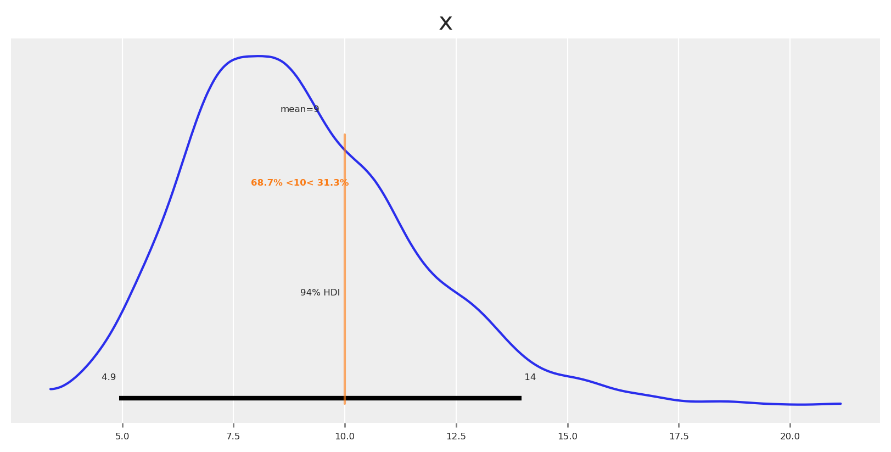

This article explores how Bayesian Media Mix Modeling (MMM) represents uncertainty and how we can optimize budget decisions under risk. We build a generative view of media response (carryover via adstock, diminishing returns via saturation, trend and seasonality) and use full posterior predictive distributions to compare allocations not only by expected outcomes but also by dispersion and tail risk.
This material accompanies my PyData Berlin 2025 talk, where I discuss practical risk-aware optimization for MMM: moving beyond mean-only plans to objectives that explicitly incorporate uncertainty—and how to communicate these trade-offs to stakeholders.
üì¶ Import libraries
Code
import warningswarnings.filterwarnings("ignore", category=UserWarning)from pymc_marketing.mmm.builders.yaml import build_mmm_from_yamlfrom pymc_marketing.mmm import GeometricAdstock, MichaelisMentenSaturationfrom pymc_marketing.mmm.budget_optimizer import optimizer_xarray_builderfrom pymc_marketing.mmm.multidimensional import ( MultiDimensionalBudgetOptimizerWrapper,)from pymc_marketing.prior import Priorfrom pymc_marketing.mmm import utility as utfrom scipy import ndimageimport arviz as azimport matplotlib.pyplot as pltimport seaborn as snsimport numpy as npimport pandas as pdimport xarray as xr
⚙️ Notebook setup
Code
az.style.use("arviz-darkgrid")plt.rcParams["figure.figsize"] = [8, 4]plt.rcParams["figure.dpi"] =100plt.rcParams["axes.labelsize"] =6plt.rcParams["xtick.labelsize"] =6plt.rcParams["ytick.labelsize"] =6plt.rcParams.update({"figure.constrained_layout.use": True})%load_ext autoreload%autoreload 2seed: int=sum(map(ord, "pydata_berlin_2025"))rng: np.random.Generator = np.random.default_rng(seed=seed)default_figsize = (8, 4) # repeat to use later
üß™ Data generation process
This section encodes a generative story for media response with clear uncertainty sources. We simulate outcomes as \[
y_t = \beta_0 + \sum_{c} f(x_{c,t}; \theta_c) + \text{trend}_t + \text{seasonality}_t + \varepsilon_t
\]
where:
\(y_t\) is the observed outcome (e.g., app installs or revenue) at time \(t\)
\(\beta_0\) is the baseline intercept
\(f(x_{c,t}; \theta_c)\) is the media response function for channel \(c\) with spend \(x_{c,t}\) and parameters \(\theta_c\).
\(\text{trend}_t\) captures long-term growth or decline patterns
\(\varepsilon_t\) represents aleatoric uncertainty—irreducible noise from unobserved factors, measurement error, and inherent randomness that remains even with perfect knowledge of all parameters
We do not consider interactions; the causal DAG looks like this:
The YAML configuration encodes a fully Bayesian MMM with priors over the core response mechanics and temporal structure. For model specifics and worked examples, see the PyMC‑Marketing Example Gallery and API.
Here we split the data into train and test sets. Not to evaluate the fit; instead, we use the test set to compare the results of the optimization, checking if it will be “better” than the budget recommendations.
As expected, some parameters are well identified while others remain uncertain.
Sampling saturation curves from the posterior helps us visualize parameter uncertainty as bands around each channel’s response. Wide bands indicate poorly identified marginal returns; allocating in those regions increases outcome variance because small parameter shifts cause large changes in response.
The picture is clear: channels like X1 and X3 exhibit more variation across spend levels, allowing the model to learn their parameters more precisely. Channels like X2 and X4 have relatively constant spending with less variation, so their parameters are estimated with greater uncertainty.
üé≤ Understanding uncertainty
In a Bayesian MMM we explicitly model two forms of uncertainty that compound in forecasts and in budget decisions:
Aleatoric uncertainty: randomness in outcomes conditional on fixed parameters. In the simulation, this is epsilon. Formally, if parameters are \(\theta\), aleatoric uncertainty is the spread of \(p(y\mid x,\theta)\) once we model the likelihood as \(\mathcal{N}(0, \sigma^2)\). In our model, the parameter \(\sigma\) explicitly captures aleatoric uncertainty: it quantifies the amount of outcome variability that remains even if all structural parameters \(\theta\) were known exactly. It represents inherent unpredictability due to unobserved micro-variation, demand shocks, or logging noise. Even with infinite data, aleatoric uncertainty remains.
Epistemic uncertainty: uncertainty about the parameters and latent functions themselves due to limited or weakly informative data. This is the spread of the posterior \(p(\theta\mid \text{data})\). It shrinks with more data, better priors, or richer experimental variation. In our model it includes carryover memory (adstock \(\alpha\)), saturation curvature and half-saturation (Michaelis–Menten \(\alpha,\lambda\)), trend slopes, and seasonal Fourier weights.
Why this separation matters for planning:
Outcome distribution under a plan. For a given allocation plan \(b\) over channels and time, the posterior predictive is \[
p\big(Y(b)\mid \text{data}\big) = \int p\big(Y(b)\mid \theta\big)\, p(\theta\mid \text{data})\, d\theta,
\] which mixes aleatoric variability (the inner term) and epistemic variability (integration over \(\theta\)). Our Monte Carlo estimator samples \(\theta^{(s)}\) from the posterior, simulates carryover and saturation under \(b\), and draws predictive outcomes.
Example: known vs unknown curvature. Suppose a channel’s saturation is well learned around historical spends but not beyond. Two plans with the same total spend differ in risk:
Plan A concentrates around the historical mode (epistemic low), yielding a narrow predictive distribution.
Plan B pushes beyond observed spends (epistemic high), producing a wider distribution and heavier downside tails if the curve flattens earlier than hoped.
During optimization, we focus on the second component —epistemic uncertainty— and can choose how much confidence we require around it. Once we choose an allocation, then we incorporate aleatoric uncertainty to quantify the total response distribution, if we want to.
üß≠ Optimization
Lets thing about our model and their outputs, starting with the posterior predictive distribution: \[
p\big(Y(b)\mid \text{data}\big) = \int p\big(Y(b)\mid \theta\big)\, p(\theta\mid \text{data})\, d\theta
\]
As you can see, the posterior predictive distribution incorporates both aleatoric and epistemic uncertainty, meaning, the optimization problem reduces to choosing an allocation \(b\) that optimizes a scalar summary of this distribution.
Formally, let \(b \in \mathbb{R}^C\) denote a feasible allocation (e.g., channel budgets) with constraints \[
\sum_{c=1}^C b_c = B, \qquad \underline{b}_c \leq b_c \leq \overline{b}_c.
\]
For each candidate allocation \(b\), we obtain Monte Carlo draws from the posterior predictive distribution: \[
\{Y^{(s)}(b)\}_{s=1}^S \sim p(Y \mid \mathrm{do}(X=b), \mathcal{D}),
\]
A statistic is then computed (for example, the mean, a quantile, a risk-adjusted score, or the mean tightness score). \[
\phi\!\left(\{Y^{(s)}(b)\}\right)
\]
By consequence, the optimization problem solved by SLSQP is simply \[
\min_{b \in \mathcal{B}} J(b), \qquad J(b) = f\!\left(\phi(\{Y^{(s)}(b)\})\right),
\]
where \(f\) is defined so the solver minimizes the chosen statistic from the posterior predictive distribution.
This formulation is flexible: by changing \(\phi\), we can target risk-neutral or risk-sensitive criteria or even heuristics, while always grounding the decision in the posterior predictive distribution.
üí° Assumption notes
Why do we say do=\((X=b)\)?
Structural invariance: The response functions (trend, seasonality, adstock, saturation, link) are invariant under interventions \(b\) over the optimization horizon.
No unmeasured confounding: Conditional on included covariates and time controls, there are no unmeasured (especially time-varying) confounders affecting both spend and outcome; the backdoor criterion holds.
We use \(p\big(Y \mid \mathrm{do}(X=b), \mathcal{D}\big)\) as shorthand for the posterior predictive under these assumptions. When allocations move far outside support, results become extrapolative and should be treated as sensitivity analysis rather than identified effects.
üõ†Ô∏è Define the optimizer
Initializing the optimizer is straightforward: pass the model and the date range.
The bar chart shows allocation and response per channel. To see totals, we can sum and create a simple scatter plot with a label for the ROAS.
Code
# Create scatterplot with spend and mean responsespend = initial_posterior_response.allocation.sum().valuesmean_response = initial_posterior_response.total_media_contribution_original_scale.mean(dim='sample').valuesinitial_roas = mean_response / spendplt.scatter(spend, mean_response, alpha=0.7, s=100, label=f"ROAS: {initial_roas:.2f}")plt.xlabel('Spend')plt.ylabel('Mean Response')plt.title('Spend vs Mean Response')plt.grid(True, alpha=0.3)plt.legend(fontsize='small', loc='upper left')plt.show()
We got a ROAS of \(3.9\) for the initial plan, which is below our target ROAS (let’s say \(8\)). Now we run a vanilla optimization to maximize mean response: can we reallocate to achieve a higher response given the same budget?
Budget allocation by channel:
x1_original_scale: 0
x2_original_scale: 0
x3_original_scale: 16
x4_original_scale: 42
Total Allocated Budget: 59
Yes, we can allocate to achieve a higher response. Let’s compare the optimized response against the baseline plan.
Code
# Create scatterplot with spend and mean responsemean_response_v2 = naive_posterior_response.total_media_contribution_original_scale.mean(dim='sample').valuesroas_v2 = mean_response_v2 / spend# Calculate the delta in responseresponse_delta = mean_response_v2.sum() - mean_response.sum()plt.scatter(spend, mean_response_v2, alpha=0.7, s=100, color="blue", label=f"Optimized allocation (+{response_delta:.1f} response, ROAS: {roas_v2:.2f})")plt.scatter(spend, mean_response, alpha=0.7, s=100, color="red", label="Guessed allocation")plt.xlabel('Spend')plt.ylabel('Mean Response')plt.title('Spend vs Mean Response')plt.grid(True, alpha=0.3)plt.legend(fontsize='small', loc='upper left')plt.show()
The optimized allocation is ~\(500\) units higher than the guessed allocation, and the new estimated ROAS is \(13\) which it’s over our expectations. As consequence, we assume we’ll get an estimate Y revenue in the next N periods and planning against this incoming cashflow we’ll get back.
The plotwist? We got a lower response, which mean a lower ROAS and we got in serious financial problems because we don’t have enough cash to payback providers or services.
Why this happen? Maximizing the mean response is risk-neutral. It often reallocates budget toward regions with potential high returns even if they are weakly identified, increasing dispersion of outcomes. This is rational when stakeholders are indifferent to risk. However, that’s not the case for every company. Sometimes our stakeholders need to know how certain we are about expected outcomes.
By inspecting posterior predictive samples under each allocation, we can quantify uncertainty and answer this question, based on the model current understanding.
Let’s plot the response distributions for both baseline and optimized allocations.
Code
fig, ax = plt.subplots()# Get the valuesoptimized_values = naive_posterior_response.total_media_contribution_original_scale.valuesguessed_values = initial_posterior_response.total_media_contribution_original_scale.values# Plot distributionsaz.plot_dist( optimized_values, color="blue", label="Optimized allocation", ax=ax,)az.plot_dist( guessed_values, color="red", label="Guessed allocation", ax=ax,)# Calculate meansoptimized_mean = optimized_values.mean()guessed_mean = guessed_values.mean()# Add vertical lines for meansax.axvline(optimized_mean, color="blue", linestyle="--", alpha=0.8)ax.axvline(guessed_mean, color="red", linestyle="--", alpha=0.8)# Add text boxes with mean valuesax.text(optimized_mean +10, ax.get_ylim()[1] *0.8, f'Optimized Mean:\n{optimized_mean:.1f}', bbox=dict(boxstyle="round,pad=0.3", facecolor="lightblue", alpha=0.7), ha='left', va='center')ax.text(guessed_mean -10, ax.get_ylim()[1] *0.6, f'Guessed Mean:\n{guessed_mean:.1f}', bbox=dict(boxstyle="round,pad=0.3", facecolor="lightcoral", alpha=0.7), ha='right', va='center')plt.title("Response Distribution")plt.xlabel("Total Media Contribution")plt.legend()plt.show()
As expected, the means differ (we optimized to increase it), and so does the certainty around the mean. Like an excersise, lets observe how probable is to get a response higher and lower than the mean.
This makes everything clear now, the chances of getting some higher or equal than the mean where 43% but the chances of getting some lower than the mean where 56%. It’s no surprise that we got a lower response and a lower ROAS.
üí° First Takeaway
Comparing full distributions makes risk transparent: width quantifies forecast reliability, skewness reveals asymmetry of upside vs downside, and overlaps show practical indistinguishability.
Where this risk is coming from? The new allocation is riskier, but why? Let’s look at each spend level relative to its saturation curve.
Vertical lines are located at the spend allocation given for each channel. For channels as x4, the model has few observations at those spend levels, so posterior bands are wide and the induced response distribution is diffuse. Risk-aware optimization tends to pull spend toward well-identified regions (often near inflection), trading a small mean decrease for a large reduction in variance.
Could we understand this in advance? and if so, would we prefer a different type of allocation? Which get us closer to our objective in a safer way? -A narrower distribution with a slightly lower mean can be preferable when shortfall risk is costly-.
The short answer is definetly. Let’s create now a new optimization process that will be risk-aware.
⚖️ Risk metrics consistent with PyMC-Marketing
Below are the definitions of two risk-aware metrics as implemented in the PyMC-Marketing library.
where - \(\mu = \mathbb{E}[Y]\) is the mean,
- \(\gamma\) is the confidence level used for the tail distance,
- \(\alpha > 0\) is a penalty weight that controls the trade-off between higher mean and tighter distribution.
Interpretation:
- Higher is better: Allocations with higher means and smaller dispersion score better. This provides a balance between risk-neutral (maximize mean) and risk-averse (penalize uncertainty) optimization.
Let’s optimize with the Mean Tightness Score and see the resulting allocation.
This makes it clear: we gained much more certainty—a risk-averse (lower-variance) response distribution. You may be thinking that playing in known regions tends to reduce the mean. Do you want to know why?
Posterior response curves tend to be more certain at the origin because two sources of uncertainty are minimized there: structurally, we know that zero spend produces zero incremental effect, and empirically, the lowest spend region is often well supported in historical data. As spend increases, especially beyond historically observed levels, epistemic uncertainty about the saturation and curvature parameters dominates, widening the credible intervals.
Does that mean we are doomed to lower values if we want certainty? Not at all, we can change the utility to prefer riskier options üî•.
Now we choose an allocation that is less certain but with higher potential upside than the baseline. Let’s plot the response distributions.
üí° Second Takeaway
Discover your risk preferences and adjust your objective function to reflect them. You don’t need to commit to a single function or approach, you can build a custom one which tailor your needs.
Great, the new allocation is riskier, and the mean is higher (still less uncertant than the risk-neutral allocation). We can go beyond visuals and quantify this.
Because all are posterior distributions, we can check the density that has each response distribution at their respective mean. We’ll be using kernel density estimation (KDE). This value, denoted \(\hat{f}(\mu)\), represents the estimated height of the probability density function at the mean. Importantly, this is not itself a probability but a density, with units of “1 over the units of the variable.” Higher values of \(\hat{f}(\mu)\) indicate that the distribution is sharply peaked around the mean, reflecting greater certainty that posterior draws will lie close to the central value. Conversely, lower values correspond to flatter, more diffuse posteriors, indicating higher uncertainty.
Let’s check the density at the mean for each allocation.
Code
from scipy.stats import gaussian_kdedef kde_density_at_point(x, x0):"""Gaussian KDE density estimate at x0 using Scott's rule bandwidth.""" kde = gaussian_kde(x) # Scott's rule by defaultreturnfloat(kde.evaluate([x0])[0])optimized_density = kde_density_at_point(optimized_values, optimized_mean)guessed_density = kde_density_at_point(guessed_values, guessed_mean)risk_adjusted_density = kde_density_at_point(optimized_risk_values, risk_adjusted_mean)inverse_risk_adjusted_density = kde_density_at_point(optimized_inverse_risk_values, inverse_risk_adjusted_mean)print(f"Optimized allocation response density at mean: {optimized_density:.3f}")print(f"Guessed allocation response density at mean: {guessed_density:.3f}")print(f"Risk-adjusted allocation response density at mean: {risk_adjusted_density:.3f}")print(f"Inverse Risk-adjusted allocation response density at mean: {inverse_risk_adjusted_density:.3f}")
Optimized allocation response density at mean: 0.001
Guessed allocation response density at mean: 0.005
Risk-adjusted allocation response density at mean: 0.013
Inverse Risk-adjusted allocation response density at mean: 0.003
The density estimations tell the same story as the plots. How can we use this to take actions? For example, suppose we want to hit a target ROAS of \(9.5\), then we can check the density of the ROAS distribution at \(9.5\) for each response distribution given their respective allocation strategy.
If we want to hit a target ROAS of \(9.5\), the risk-neutral optimized allocation is the most certain, followed by the inverse risk-adjusted allocation.
If instead our target ROAS is \(7\), the inverse risk-adjusted allocation concentrates more density around that value, and the risk-neutral optimized allocation has less density around it.
Under this paradigm, you can define a target estimate and select an allocation that maximizes the probability of hitting it. One way is to create a function that reduces variance with respect to the target, favoring narrower distributions with density near the target.
Let’s make this custom utility function, and see how it performs.
Code
import pytensor.tensor as ptimport pymc_marketing.mmm.utility as utdef target_hit_probability(target, num_periods):""" Target hit probability utility function. Minimizing the mean squared error between predicted ROAS and the target Adding a variance penalty to encourage tighter distributions. Parameters ---------- target : float The target ROAS value to optimize towards num_periods : int Number of time periods for the budget allocation Returns ------- callable A utility function that can be used with the budget optimizer. Returns negative objective (since optimizer minimizes). """def _function(samples, budgets): roas_samples = samples / (pt.sum(budgets) * num_periods)# Use mean squared error from target, which provides smoother gradients mse_from_target = pt.mean((roas_samples - target) **2)# Add penalty for variance to encourage tighter distributions around target variance_penalty = pt.var(roas_samples)# Combine MSE and variance penalty with weighting# Higher variance penalty encourages narrower distributions total_objective = mse_from_target +0.1* variance_penaltyreturn-total_objectivereturn _function_roas_target =10custom_utility_budget_allocation, custom_utility_optimizer_result, callback_results = ( optimizable_model.optimize_budget( budget=time_unit_budget, utility_function=target_hit_probability(_roas_target, num_periods), callback=True, minimize_kwargs={"options": {"maxiter": 2_000}}, ))custom_utility_posterior_response = optimizable_model.sample_response_distribution( allocation_strategy=custom_utility_budget_allocation, include_carryover=True, include_last_observations=False, additional_var_names=["y_original_scale"])# Print budget allocation by channelprint("Budget allocation by channel:")for channel in channels:print(f" {channel}: {custom_utility_posterior_response.allocation.sel(channel=channel).astype(int).sum():,}" )print(f"Total Allocated Budget: {np.sum(custom_utility_posterior_response.allocation.to_numpy()):,.0f}")
Budget allocation by channel:
x1_original_scale: 23
x2_original_scale: 0
x3_original_scale: 23
x4_original_scale: 12
Total Allocated Budget: 59
The allocation is similar to those observed before. Let’s plot the ROAS distributions.
Great üôåüèª The initial optimized allocation which was risk neutral, had initially the higher density around the target ROAS, but the density around it was not high enough, the new allocation bring a more certain answer around the target, because the objective function was built for it.
üí° Key Insight
Here we have a custom utility function that allows us to optimize for a target ROAS. Nevertheless, you can build other utilities and use them as objectives. You can also introduce risk-aware constraints—without on top of your business constraints.
Let’s observe our final posterior around the target ROAS.
We could report: the probability of achieving ROAS ≥ 10 with this allocation is 31%, and ROAS < 10 is 69%. If we need more certainty, we can make the optimization more risk-averse.
Now, if you want to think really bayesian, then you can define a region of practical equivalence, and check the probability of the ROAS being in that region. For example, you can ask yourself: Would I do something different if ROAS is 7, 9 or 11? If the answer it’s no, then you find your ROPE.
Let’s say we want to know the probability of the ROAS being between \(7\) and \(11\).
Code
# Calculate probability of ROAS being between 7 and 9prob_7_to_11 = np.mean((custom_utility_roas >=7) & (custom_utility_roas <=11))# Plot posterior with reference values and regionfig, ax = plt.subplots()az.plot_posterior( custom_utility_roas, ref_val=_roas_target, ax=ax)# Add vertical lines for the region of interestax.axvline(7, color="black", linestyle="--", alpha=0.7, label="ROAS = 7")ax.axvline(11, color="black", linestyle="--", alpha=0.7, label="ROAS = 11")# Add text box with probabilityax.text(0.02, 0.98, f'P(7 ≤ ROAS ≤ 11) = {prob_7_to_11:.2%}', transform=ax.transAxes, bbox=dict(boxstyle="round,pad=0.3", facecolor="lightblue", alpha=0.8), ha='left', va='top', fontsize=12)plt.show()

üí° Key Insight
You can define a region of practical equivalence (ROPE), in order to be more precise with your decision making. This is quite natural way to think about a problem, and lightens the burden of the decision maker to commit to a single number. At the end of the day, we don’t need to be 99.999% precise around every single answer, or number, we can be 95% or 90% precise and sometimes that’s enough. Identify if thats your case, and think accordingly.
✅ Takeaways on uncertainty
Treat uncertainty as first-class: Optimize over the full posterior predictive, not point estimates. Compare plans by their distributions, not just expected means.
Separate uncertainty types: Aleatoric (irreducible noise) vs epistemic (learnable model/parameter uncertainty). Planning choices mostly shift epistemic risk; always communicate both.
Find your risk appetite: Ask stakeholders how certain we must be about reported results. What changes if they are a bit higher or lower?
Choose a utility aligned to risk appetite: Working with the mean is risk-neutral; quantiles, TailDistance, CVaR, or MTS are more risk-aware.
Communicate distributions, not single numbers: Show HDIs/quantiles and probabilities (e.g., P(ROAS ≥ target)). It’s better to understand the full spectrum of possibilities than to follow single numbers and be short-sighted.
Define a region of practical equivalence (ROPE): Once you are comfortable with the uncertainty, play with ROPEs and find out how much you could lighten the estimated answer, and if you will do anything different if this one change under a range of values.
üöß Limitations
This approach represents the model’s confidence, but models can be very certain about a wrong answer. Always add business knowledge and guardrails to keep recommendations realistic.
Conclusion
Hope this article was helpful to understand how to use Bayesian media mix models to optimize your media spend. Understand uncertanty it’s a powerful tool to make better decisions, but it’s not a silver bullet.
The current example is a simple one, real life applications are more complex and require more sophisticated models, risk functions, and complex optimization problems, where constraints and business knowledge are key.
At PyMC Labs we’re building tools to make this process easier. If you’re interested in learning more, explore the PyMC‑Marketing Example Gallery and API, our documentation and blog.
You can get a 30 minutes free consultation with our team to discuss your specific needs and how we can help you.
Discovery session with PyMC Labs team: Book a call
Thanks if you read this far!
Source Code
---title: "Bayesian Models and Risk Optimization"date: "2025-08-20"categories: [MMM, python, optimization, media mix modeling, bayesian, pymc, pydata, germany, berlin]image: "../images/bayesian_models_and_risk_optimization.png"jupyter: cetagostini_webformat: html: code-fold: true code-tools: true code-overflow: wrap---# üìò IntroductionThis article explores how Bayesian Media Mix Modeling (MMM) represents uncertainty and how we can optimize budget decisions under risk. We build a generative view of media response (carryover via adstock, diminishing returns via saturation, trend and seasonality) and use full posterior predictive distributions to compare allocations not only by expected outcomes but also by dispersion and tail risk.This material accompanies my PyData Berlin 2025 talk, where I discuss practical risk-aware optimization for MMM: moving beyond mean-only plans to objectives that explicitly incorporate uncertainty‚Äîand how to communicate these trade-offs to stakeholders.# üì¶ Import libraries```{python}#| warning: falseimport warningswarnings.filterwarnings("ignore", category=UserWarning)from pymc_marketing.mmm.builders.yaml import build_mmm_from_yamlfrom pymc_marketing.mmm import GeometricAdstock, MichaelisMentenSaturationfrom pymc_marketing.mmm.budget_optimizer import optimizer_xarray_builderfrom pymc_marketing.mmm.multidimensional import ( MultiDimensionalBudgetOptimizerWrapper,)from pymc_marketing.prior import Priorfrom pymc_marketing.mmm import utility as utfrom scipy import ndimageimport arviz as azimport matplotlib.pyplot as pltimport seaborn as snsimport numpy as npimport pandas as pdimport xarray as xr```# ‚öôÔ∏è Notebook setup ```{python}#| warning: falseaz.style.use("arviz-darkgrid")plt.rcParams["figure.figsize"] = [8, 4]plt.rcParams["figure.dpi"] =100plt.rcParams["axes.labelsize"] =6plt.rcParams["xtick.labelsize"] =6plt.rcParams["ytick.labelsize"] =6plt.rcParams.update({"figure.constrained_layout.use": True})%load_ext autoreload%autoreload 2seed: int=sum(map(ord, "pydata_berlin_2025"))rng: np.random.Generator = np.random.default_rng(seed=seed)default_figsize = (8, 4) # repeat to use later```# üß™ Data generation processThis section encodes a generative story for media response with clear uncertainty sources. We simulate outcomes as$$y_t = \beta_0 + \sum_{c} f(x_{c,t}; \theta_c) + \text{trend}_t + \text{seasonality}_t + \varepsilon_t$$where:- $y_t$ is the observed outcome (e.g., app installs or revenue) at time $t$- $\beta_0$ is the baseline intercept- $f(x_{c,t}; \theta_c)$ is the media response function for channel $c$ with spend $x_{c,t}$ and parameters $\theta_c$.- $\text{trend}_t$ captures long-term growth or decline patterns- $\text{seasonality}_t$ models periodic effects (weekly, monthly patterns)- $\varepsilon_t$ represents aleatoric uncertainty‚Äîirreducible noise from unobserved factors, measurement error, and inherent randomness that remains even with perfect knowledge of all parametersWe do not consider interactions; the causal DAG looks like this:```{python}#| warning: falseimport graphvizgraph = graphviz.Digraph()graph.node("Media Spend")graph.node("Trend", style="dashed")graph.node("Seasonality", style="dashed")graph.node("Target")graph.edge("Media Spend", "Target")graph.edge("Trend", "Target")graph.edge("Seasonality", "Target")graph```## üìÜ Date rangeWe start by defining the date range.```{python}#| warning: false# date rangemin_date = pd.to_datetime("2024-09-01")max_date = pd.to_datetime("2025-09-01")df = pd.DataFrame( data={"date_week": pd.date_range(start=min_date, end=max_date, freq="W-MON")})n = df.shape[0]print(f"Number of observations: {n}")df.head()```## üì£ Media data```{python}#| warning: false# media datascaler_x1 =300scaler_x2 =280scaler_x3 =50scaler_x4 =100y_scaler =1000# media datax1 = rng.uniform(low=0.0, high=1.0, size=n)df["x1"] = np.where(x1 >0.8, x1, x1 /2)x2 = rng.uniform(low=0.0, high=0.6, size=n)df["x2"] = np.where(x2 >0.5, x2, 0)x3 = rng.uniform(low=0.0, high=0.8, size=n)df["x3"] = np.where(x3 >0.7, x3, x3 /6)x4 = rng.uniform(low=0.0, high=0.2, size=n)df["x4"] = np.where(x4 >0.15, x4, x4 /2)fig, ax = plt.subplots( nrows=4, ncols=1, sharex=True, sharey=True, layout="constrained")sns.lineplot(x="date_week", y="x1", data=df, color="C0", ax=ax[0])sns.lineplot(x="date_week", y="x2", data=df, color="C1", ax=ax[1])sns.lineplot(x="date_week", y="x3", data=df, color="C2", ax=ax[2])sns.lineplot(x="date_week", y="x4", data=df, color="C3", ax=ax[3])ax[3].set(xlabel="date")fig.suptitle("Media Costs Data", fontsize=16);```## üìà Trend and seasonality componentsWe define trend and seasonality. Seasonality follows a 4-week cycle modeled with a Fourier basis; trend is linear.```{python}#| warning: false# Create Fourier components for monthly seasonalitymonthly_period =4# 4-week cyclet = np.arange(n)# Create sin-cos signals for fourier componentsmonthly_sin = np.sin(2* np.pi * t / monthly_period)monthly_cos = np.cos(2* np.pi * t / monthly_period)# Combine sin-cos to create the desired pattern# Use coefficients to shape the patternmonthly_pattern =0.6* monthly_sin +0.4* monthly_cos# Apply smoothing using ndimage to reduce sharp transitionsmonthly_pattern = ndimage.gaussian_filter1d(monthly_pattern, sigma=0.2)# Normalize to [-1, 1] rangemonthly_pattern = (monthly_pattern / np.max(np.abs(monthly_pattern))) *.18df["monthly_effect"] = monthly_patterndf["trend"] = (np.linspace(start=0.0, stop=10, num=n) +10) ** (1/8) -1fig, (ax1, ax2) = plt.subplots(2, 1, sharex=True)# Plot monthly patternax1.plot(df["date_week"], monthly_pattern, label="Monthly Pattern (Smoothed)", linewidth=2, color='blue')ax1.set_ylabel("Pattern Value")ax1.set_title("Monthly Fourier Pattern (4-week cycle, Smoothed)")ax1.grid(True, alpha=0.3)ax1.legend()# Plot trendax2.plot(df["date_week"], df["trend"], label="Trend", linewidth=2, color='red')ax2.set_xlabel("Date")ax2.set_ylabel("Trend Value")ax2.set_title("Linear Trend Component")ax2.grid(True, alpha=0.3)ax2.legend()plt.tight_layout()plt.show()```## üîÅ Adstock and saturation transformationsFirst, we apply the adstock transformation to the media data.```{python}#| warning: false# apply geometric adstock transformationalpha: float=0.55df["x1_adstock"] = ( GeometricAdstock(l_max=8, normalize=True).function(x=df["x1"].to_numpy(), alpha=alpha) .eval())df["x2_adstock"] = ( GeometricAdstock(l_max=8, normalize=True).function(x=df["x2"].to_numpy(), alpha=alpha) .eval())df["x3_adstock"] = ( GeometricAdstock(l_max=8, normalize=True).function(x=df["x3"].to_numpy(), alpha=alpha) .eval())df["x4_adstock"] = ( GeometricAdstock(l_max=8, normalize=True).function(x=df["x4"].to_numpy(), alpha=alpha) .eval())df.head()```Then we apply the saturation transformation to the adstock transformed media data.```{python}#| warning: falsealpha_sat_x1: float=0.3lam_sat_x1: float=1.1alpha_sat_x2: float=0.1lam_sat_x2: float=1.5alpha_sat_x3: float=0.2lam_sat_x3: float=0.3alpha_sat_x4: float=0.8lam_sat_x4: float=0.8df["x1_adstock_saturated"] = ( MichaelisMentenSaturation().function( x=df["x1_adstock"].to_numpy(), alpha=alpha_sat_x1, lam=lam_sat_x1, ).eval())df["x2_adstock_saturated"] = ( MichaelisMentenSaturation().function( x=df["x2_adstock"].to_numpy(), alpha=alpha_sat_x2, lam=lam_sat_x2, ).eval())df["x3_adstock_saturated"] = ( MichaelisMentenSaturation().function( x=df["x3_adstock"].to_numpy(), alpha=alpha_sat_x3, lam=lam_sat_x3, ).eval())df["x4_adstock_saturated"] = ( MichaelisMentenSaturation().function( x=df["x4_adstock"].to_numpy(), alpha=alpha_sat_x4, lam=lam_sat_x4, ).eval())df.head()```Let's visualize how the media data look after adstock and saturation, and how they translate into units of Y (app installs or revenue).```{python}#| warning: falsefig, ax = plt.subplots( nrows=3, ncols=4, sharex=True, sharey=False, layout="constrained")sns.lineplot(x="date_week", y="x1", data=df, color="C0", ax=ax[0, 0])sns.lineplot(x="date_week", y="x2", data=df, color="C1", ax=ax[0, 1])sns.lineplot(x="date_week", y="x1_adstock", data=df, color="C0", ax=ax[1, 0])sns.lineplot(x="date_week", y="x2_adstock", data=df, color="C1", ax=ax[1, 1])sns.lineplot(x="date_week", y="x1_adstock_saturated", data=df, color="C0", ax=ax[2, 0])sns.lineplot(x="date_week", y="x2_adstock_saturated", data=df, color="C1", ax=ax[2, 1])sns.lineplot(x="date_week", y="x3", data=df, color="C2", ax=ax[0, 2])sns.lineplot(x="date_week", y="x3_adstock", data=df, color="C2", ax=ax[1, 2])sns.lineplot(x="date_week", y="x3_adstock_saturated", data=df, color="C2", ax=ax[2, 2])sns.lineplot(x="date_week", y="x4", data=df, color="C3", ax=ax[0, 3])sns.lineplot(x="date_week", y="x4_adstock", data=df, color="C3", ax=ax[1, 3])sns.lineplot(x="date_week", y="x4_adstock_saturated", data=df, color="C3", ax=ax[2, 3])fig.suptitle("Media Costs Data - Transformed", fontsize=16);```We now add the intercept and noise, and sum the transformed media, trend, and seasonality components.```{python}#| warning: falsedf["intercept"] =0.15df["epsilon"] = rng.normal(loc=0.0, scale=0.075, size=n)df["app_installs"] = df[["intercept", "x1_adstock_saturated", "x2_adstock_saturated", "x3_adstock_saturated", "x4_adstock_saturated", "trend", "monthly_effect", "epsilon"]].sum(axis=1)df["app_installs"] *= y_scalerdf.head()```This is how the target looks.```{python}#| warning: falsedf.set_index("date_week").app_installs.plot();```We also add the original media to the DataFrame so we can visualize it before any transformations and use it as model input.```{python}#| warning: falsedf[["x1_original_scale", "x2_original_scale", "x3_original_scale", "x4_original_scale"]] = df[["x1", "x2", "x3", "x4"]]df["x1_original_scale"] *= scaler_x1df["x2_original_scale"] *= scaler_x2df["x3_original_scale"] *= scaler_x3df["x4_original_scale"] *= scaler_x4df[["date_week", "x1_original_scale", "x2_original_scale", "x3_original_scale", "app_installs"]].head()```# üèóÔ∏è Building the modelThe YAML configuration encodes a fully Bayesian MMM with priors over the core response mechanics and temporal structure. For model specifics and worked examples, see the PyMC‑Marketing [Example Gallery](https://www.pymc-marketing.io/en/stable/gallery/gallery.html) and [API](https://www.pymc-marketing.io/en/stable/api/index.html).Here we split the data into train and test sets. Not to evaluate the fit; instead, we use the test set to compare the results of the optimization, checking if it will be "better" than the budget recommendations.```{python}#| warning: falsedf_train = df.query("date_week <= '2025-08-30'").copy()x_train = df_train[["date_week", "x1_original_scale", "x2_original_scale", "x3_original_scale", "x4_original_scale"]]y_train = df_train["app_installs"]df_test = df.query("date_week > '2025-08-30'").copy()x_test = df_test[["date_week", "x1_original_scale", "x2_original_scale", "x3_original_scale", "x4_original_scale"]]y_test = df_test["app_installs"]```Because the model was defined previously in the YAML, building it is straightforward and takes only a few lines.```{python}#| warning: falsemmm = build_mmm_from_yaml( X=x_train, y=y_train, config_path="pymc_model.yml",)```Now we fit the model and check convergence.```{python}#| warning: falsemmm.fit( X=x_train, y=y_train, random_seed=rng,)mmm.sample_posterior_predictive( X=x_train, extend_idata=True, combined=True, random_seed=rng,)```Great, no divergences üî•```{python}#| warning: falsemmm.idata.sample_stats.diverging.sum().item()```Now we inspect the parameters relevant for optimization.```{python}#| warning: falsemedia_vars = ["saturation_alpha","saturation_lam","adstock_alpha",]_ = az.plot_trace( data=mmm.fit_result, var_names=media_vars, compact=True, backend_kwargs={"figsize": default_figsize, "layout": "constrained"},)plt.gcf().suptitle("Model Trace", fontsize=16, fontweight="bold", y=1.03);```As expected, some parameters are well identified while others remain uncertain.Sampling saturation curves from the posterior helps us visualize parameter uncertainty as bands around each channel‚Äôs response. Wide bands indicate poorly identified marginal returns; allocating in those regions increases outcome variance because small parameter shifts cause large changes in response.```{python}#| warning: falsecurve = mmm.saturation.sample_curve( mmm.idata.posterior[["saturation_alpha", "saturation_lam"]], max_value=3)fig, axes = mmm.plot.saturation_curves( curve, original_scale=True, n_samples=10, hdi_probs=0.85, random_seed=rng, subplot_kwargs={"figsize": default_figsize, "ncols": 4, "sharey": True}, rc_params={"xtick.labelsize": 10,"ytick.labelsize": 10,"axes.labelsize": 10,"axes.titlesize": 10, },)for ax in axes.ravel(): ax.title.set_fontsize(10)if fig._suptitle isnotNone: fig._suptitle.set_fontsize(12)plt.tight_layout()plt.show()```The picture is clear: channels like X1 and X3 exhibit more variation across spend levels, allowing the model to learn their parameters more precisely. Channels like X2 and X4 have relatively constant spending with less variation, so their parameters are estimated with greater uncertainty.# üé≤ Understanding uncertaintyIn a Bayesian MMM we explicitly model two forms of uncertainty that compound in forecasts and in budget decisions:- Aleatoric uncertainty: randomness in outcomes conditional on fixed parameters. In the simulation, this is `epsilon`. Formally, if parameters are $\theta$, aleatoric uncertainty is the spread of $p(y\mid x,\theta)$ once we model the likelihood as $\mathcal{N}(0, \sigma^2)$. In our model, the parameter $\sigma$ explicitly captures aleatoric uncertainty: it quantifies the amount of outcome variability that remains even if all structural parameters $\theta$ were known exactly. It represents inherent unpredictability due to unobserved micro-variation, demand shocks, or logging noise. Even with infinite data, aleatoric uncertainty remains.- Epistemic uncertainty: uncertainty about the parameters and latent functions themselves due to limited or weakly informative data. This is the spread of the posterior $p(\theta\mid \text{data})$. It shrinks with more data, better priors, or richer experimental variation. In our model it includes carryover memory (adstock $\alpha$), saturation curvature and half-saturation (Michaelis‚ÄìMenten $\alpha,\lambda$), trend slopes, and seasonal Fourier weights.Why this separation matters for planning:1) Outcome distribution under a plan. For a given allocation plan $b$ over channels and time, the posterior predictive is$$p\big(Y(b)\mid \text{data}\big) = \int p\big(Y(b)\mid \theta\big)\, p(\theta\mid \text{data})\, d\theta,$$which mixes aleatoric variability (the inner term) and epistemic variability (integration over $\theta$). Our Monte Carlo estimator samples $\theta^{(s)}$ from the posterior, simulates carryover and saturation under $b$, and draws predictive outcomes.2) Example: known vs unknown curvature. Suppose a channel‚Äôs saturation is well learned around historical spends but not beyond. Two plans with the same total spend differ in risk: - Plan A concentrates around the historical mode (epistemic low), yielding a narrow predictive distribution. - Plan B pushes beyond observed spends (epistemic high), producing a wider distribution and heavier downside tails if the curve flattens earlier than hoped.During optimization, we focus on the second component ‚Äîepistemic uncertainty‚Äî and can choose how much confidence we require around it. Once we choose an allocation, then we incorporate aleatoric uncertainty to quantify the total response distribution, if we want to.# üß≠ OptimizationLets thing about our model and their outputs, starting with the posterior predictive distribution:$$p\big(Y(b)\mid \text{data}\big) = \int p\big(Y(b)\mid \theta\big)\, p(\theta\mid \text{data})\, d\theta$$As you can see, the posterior predictive distribution incorporates both aleatoric and epistemic uncertainty, meaning, the optimization problem reduces to choosing an allocation $b$ that optimizes a scalar summary of this distribution.Formally, let $b \in \mathbb{R}^C$ denote a feasible allocation (e.g., channel budgets) with constraints$$\sum_{c=1}^C b_c = B, \qquad \underline{b}_c \leq b_c \leq \overline{b}_c.$$For each candidate allocation $b$, we obtain Monte Carlo draws from the posterior predictive distribution:$$\{Y^{(s)}(b)\}_{s=1}^S \sim p(Y \mid \mathrm{do}(X=b), \mathcal{D}),$$A statistic is then computed (for example, the mean, a quantile, a risk-adjusted score, or the mean tightness score). $$\phi\!\left(\{Y^{(s)}(b)\}\right)$$ By consequence, the optimization problem solved by SLSQP is simply$$\min_{b \in \mathcal{B}} J(b), \qquad J(b) = f\!\left(\phi(\{Y^{(s)}(b)\})\right),$$where $f$ is defined so the solver minimizes the chosen statistic from the posterior predictive distribution. This formulation is flexible: by changing $\phi$, we can target risk-neutral or risk-sensitive criteria or even heuristics, while always grounding the decision in the posterior predictive distribution.::: {.callout-note}## üí° Assumption notesWhy do we say do=$(X=b)$?- **Structural invariance**: The response functions (trend, seasonality, adstock, saturation, link) are invariant under interventions $b$ over the optimization horizon.- **No unmeasured confounding**: Conditional on included covariates and time controls, there are no unmeasured (especially time-varying) confounders affecting both spend and outcome; the backdoor criterion holds.We use $p\big(Y \mid \mathrm{do}(X=b), \mathcal{D}\big)$ as shorthand for the posterior predictive under these assumptions. When allocations move far outside support, results become extrapolative and should be treated as sensitivity analysis rather than identified effects.:::## üõ†Ô∏è Define the optimizerInitializing the optimizer is straightforward: pass the model and the date range.```{python}#| warning: falseoptimizable_model = MultiDimensionalBudgetOptimizerWrapper( model=mmm, start_date=df_test.date_week.min().strftime("%Y-%m-%d"), end_date=df_test.date_week.max().strftime("%Y-%m-%d"))print(f"Start date: {optimizable_model.start_date}")print(f"End date: {optimizable_model.end_date}")```We'll use the test set to define the budget and optimization period so we can compare the resulting allocation to our current plan.```{python}#| warning: false channels = ["x1_original_scale", "x2_original_scale", "x3_original_scale", "x4_original_scale"]num_periods = optimizable_model.num_periodstime_unit_budget = df_test[channels].sum(axis=1).mean()print(f"Total budget to allocate: {num_periods * time_unit_budget:,.0f}")```Given the budget and channels, we can estimate the response for our initial plan.```{python}#| warning: falseinitial_budget = df_test[channels].sum(axis=0).to_xarray().rename({"index":"channel"})initial_posterior_response = optimizable_model.sample_response_distribution( allocation_strategy=initial_budget, include_carryover=True, include_last_observations=False, additional_var_names=["y_original_scale"])fig, ax = optimizable_model.plot.budget_allocation( samples=initial_posterior_response, figsize=default_figsize,)```The bar chart shows allocation and response per channel. To see totals, we can sum and create a simple scatter plot with a label for the ROAS.```{python}#| warning: false# Create scatterplot with spend and mean responsespend = initial_posterior_response.allocation.sum().valuesmean_response = initial_posterior_response.total_media_contribution_original_scale.mean(dim='sample').valuesinitial_roas = mean_response / spendplt.scatter(spend, mean_response, alpha=0.7, s=100, label=f"ROAS: {initial_roas:.2f}")plt.xlabel('Spend')plt.ylabel('Mean Response')plt.title('Spend vs Mean Response')plt.grid(True, alpha=0.3)plt.legend(fontsize='small', loc='upper left')plt.show()```We got a ROAS of $3.9$ for the initial plan, which is below our target ROAS (let's say $8$). Now we run a vanilla optimization to maximize mean response: can we reallocate to achieve a higher response given the same budget?```{python}#| warning: falseallocation_strategy, optimization_result = optimizable_model.optimize_budget( budget=time_unit_budget,)naive_posterior_response = optimizable_model.sample_response_distribution( allocation_strategy=allocation_strategy, include_carryover=True, include_last_observations=False, additional_var_names=["y_original_scale"])print("Budget allocation by channel:")for channel in channels:print(f" {channel}: {naive_posterior_response.allocation.sel(channel=channel).astype(int).sum():,}" )print(f"Total Allocated Budget: {np.sum(naive_posterior_response.allocation.to_numpy()):,.0f}")fig, ax = optimizable_model.plot.budget_allocation( samples=naive_posterior_response, figsize=default_figsize,)```Yes, we can allocate to achieve a higher response. Let's compare the optimized response against the baseline plan.```{python}#| warning: false# Create scatterplot with spend and mean responsemean_response_v2 = naive_posterior_response.total_media_contribution_original_scale.mean(dim='sample').valuesroas_v2 = mean_response_v2 / spend# Calculate the delta in responseresponse_delta = mean_response_v2.sum() - mean_response.sum()plt.scatter(spend, mean_response_v2, alpha=0.7, s=100, color="blue", label=f"Optimized allocation (+{response_delta:.1f} response, ROAS: {roas_v2:.2f})")plt.scatter(spend, mean_response, alpha=0.7, s=100, color="red", label="Guessed allocation")plt.xlabel('Spend')plt.ylabel('Mean Response')plt.title('Spend vs Mean Response')plt.grid(True, alpha=0.3)plt.legend(fontsize='small', loc='upper left')plt.show()```The optimized allocation is ~$500$ units higher than the guessed allocation, and the new estimated ROAS is $13$ which it's over our expectations. As consequence, we assume we'll get an estimate Y revenue in the next N periods and planning against this incoming cashflow we'll get back.The plotwist? We got a lower response, which mean a lower ROAS and we got in serious financial problems because we don't have enough cash to payback providers or services.Why this happen? Maximizing the mean response is risk-neutral. It often reallocates budget toward regions with potential high returns even if they are weakly identified, increasing dispersion of outcomes. This is rational when stakeholders are indifferent to risk. However, that's not the case for every company. Sometimes our stakeholders need to know how certain we are about expected outcomes.By inspecting posterior predictive samples under each allocation, we can quantify uncertainty and answer this question, based on the model current understanding.Let's plot the response distributions for both baseline and optimized allocations.```{python}#| warning: falsefig, ax = plt.subplots()# Get the valuesoptimized_values = naive_posterior_response.total_media_contribution_original_scale.valuesguessed_values = initial_posterior_response.total_media_contribution_original_scale.values# Plot distributionsaz.plot_dist( optimized_values, color="blue", label="Optimized allocation", ax=ax,)az.plot_dist( guessed_values, color="red", label="Guessed allocation", ax=ax,)# Calculate meansoptimized_mean = optimized_values.mean()guessed_mean = guessed_values.mean()# Add vertical lines for meansax.axvline(optimized_mean, color="blue", linestyle="--", alpha=0.8)ax.axvline(guessed_mean, color="red", linestyle="--", alpha=0.8)# Add text boxes with mean valuesax.text(optimized_mean +10, ax.get_ylim()[1] *0.8, f'Optimized Mean:\n{optimized_mean:.1f}', bbox=dict(boxstyle="round,pad=0.3", facecolor="lightblue", alpha=0.7), ha='left', va='center')ax.text(guessed_mean -10, ax.get_ylim()[1] *0.6, f'Guessed Mean:\n{guessed_mean:.1f}', bbox=dict(boxstyle="round,pad=0.3", facecolor="lightcoral", alpha=0.7), ha='right', va='center')plt.title("Response Distribution")plt.xlabel("Total Media Contribution")plt.legend()plt.show()```As expected, the means differ (we optimized to increase it), and so does the certainty around the mean. Like an excersise, lets observe how probable is to get a response higher and lower than the mean.```{python}#| warning: falseaz.plot_posterior( optimized_values, figsize=default_figsize, ref_val=optimized_mean,)plt.show()```This makes everything clear now, the chances of getting some higher or equal than the mean where 43% but the chances of getting some lower than the mean where 56%. It's no surprise that we got a lower response and a lower ROAS.::: {.callout-tip icon=false}## üí° First TakeawayComparing full distributions makes risk transparent: width quantifies forecast reliability, skewness reveals asymmetry of upside vs downside, and overlaps show practical indistinguishability. :::Where this risk is coming from? The new allocation is riskier, but why? Let's look at each spend level relative to its saturation curve.```{python}#| warning: falsecurve = mmm.saturation.sample_curve( mmm.idata.posterior[["saturation_alpha", "saturation_lam"]], max_value=10)fig, axes = mmm.plot.saturation_curves( curve, original_scale=True, n_samples=10, hdi_probs=0.85, random_seed=rng, subplot_kwargs={"figsize": default_figsize, "ncols": 4, "sharey": True}, rc_params={"xtick.labelsize": 10,"ytick.labelsize": 10,"axes.labelsize": 10,"axes.titlesize": 10, },)# Add vertical lines for optimal allocation on each subplotallocation_values = naive_posterior_response.allocation.valueschannel_names = naive_posterior_response.allocation.channel.valuesfor i, (ax, allocation_value) inenumerate(zip(axes.ravel(), allocation_values)): ax.axvline(allocation_value, color="red", linestyle="--", alpha=0.8, linewidth=2, label="Optimal allocation") ax.title.set_fontsize(10)if fig._suptitle isnotNone: fig._suptitle.set_fontsize(12)plt.tight_layout()plt.show()```Vertical lines are located at the spend allocation given for each channel. For channels as x4, the model has few observations at those spend levels, so posterior bands are wide and the induced response distribution is diffuse. Risk-aware optimization tends to pull spend toward well-identified regions (often near inflection), trading a small mean decrease for a large reduction in variance.Could we understand this in advance? and if so, would we prefer a different type of allocation? Which get us closer to our objective in a safer way? -A narrower distribution with a slightly lower mean can be preferable when shortfall risk is costly-.The short answer is **definetly**. Let's create now a new optimization process that will be risk-aware. # ‚öñÔ∏è Risk metrics consistent with PyMC-MarketingBelow are the definitions of two risk-aware metrics as implemented in the PyMC-Marketing library.---## üå™Ô∏è Tail DistanceFor a confidence level $\gamma \in (0,1)$,$$\operatorname{TailDistance}_\gamma(Y) \;=\; \big|Q_{1-\gamma}(Y) - \mu\big| \;+\; \big|\mu - Q_{\gamma}(Y)\big|,$$where - $\mu = \mathbb{E}[Y]$ is the mean (estimated by the sample mean), - $Q_q(Y)$ is the $q$-th quantile of the distribution of $Y$.This metric measures the **spread of the distribution's tails around the mean**. Larger values indicate wider tails and thus higher uncertainty.---## üéØ Mean Tightness Score (MTS)The Mean Tightness Score combines the mean with a penalty for tail spread:$$\operatorname{MTS}(Y; \alpha, \gamma) \;=\; \mu \;-\; \alpha \cdot \operatorname{TailDistance}_\gamma(Y),$$where - $\mu = \mathbb{E}[Y]$ is the mean, - $\gamma$ is the confidence level used for the tail distance, - $\alpha > 0$ is a penalty weight that controls the trade-off between higher mean and tighter distribution.Interpretation: - **Higher is better:** Allocations with higher means and smaller dispersion score better. This provides a balance between risk-neutral (maximize mean) and risk-averse (penalize uncertainty) optimization.Let's optimize with the Mean Tightness Score and see the resulting allocation.```{python}#| warning: falsemts_budget_allocation, mts_optimizer_result, callback_results = ( optimizable_model.optimize_budget( budget=time_unit_budget, utility_function=ut.mean_tightness_score(alpha=0.15), callback=True, minimize_kwargs={"options": {"maxiter": 2_000, "ftol": 1e-16}}, ))mts_posterior_response = optimizable_model.sample_response_distribution( allocation_strategy=mts_budget_allocation, include_carryover=True, include_last_observations=False, additional_var_names=["y_original_scale"])# Print budget allocation by channelprint("Budget allocation by channel:")for channel in channels:print(f" {channel}: {mts_posterior_response.allocation.sel(channel=channel).astype(int).sum():,}" )print(f"Total Allocated Budget: {np.sum(mts_posterior_response.allocation.to_numpy()):,.0f}")```Great, it looks like the allocation shifts toward better-identified regions. Let's plot the saturation curves to see where the allocation lands.```{python}#| warning: falsecurve = mmm.saturation.sample_curve( mmm.idata.posterior[["saturation_alpha", "saturation_lam"]], max_value=4)fig, axes = mmm.plot.saturation_curves( curve, original_scale=True, n_samples=10, hdi_probs=0.85, random_seed=rng, subplot_kwargs={"figsize": default_figsize, "ncols": 4, "sharey": True}, rc_params={"xtick.labelsize": 10,"ytick.labelsize": 10,"axes.labelsize": 10,"axes.titlesize": 10, },)# Add vertical lines for optimal allocation on each subplotallocation_values = mts_posterior_response.allocation.valuesfor i, (ax, allocation_value) inenumerate(zip(axes.ravel(), allocation_values)): ax.axvline(allocation_value, color="red", linestyle="--", alpha=0.8, linewidth=2, label="Optimal allocation") ax.title.set_fontsize(10)if fig._suptitle isnotNone: fig._suptitle.set_fontsize(12)plt.tight_layout()plt.show()```As expected, recommendations for every channel lie in well-known regions.The consequence: the posterior distribution narrows because budget concentrates in well-learned, less-nonlinear regions.Let's plot posterior distributions for this lower-risk allocation.```{python}#| warning: falsefig, ax = plt.subplots()# Get the valuesoptimized_risk_values = mts_posterior_response.total_media_contribution_original_scale.values# Plot distributionsaz.plot_dist( optimized_values, color="blue", label="Optimized allocation", ax=ax,)az.plot_dist( guessed_values, color="red", label="Guessed allocation", ax=ax,)az.plot_dist( optimized_risk_values, color="green", label="Risk-adjusted allocation", ax=ax,)# Calculate meansrisk_adjusted_mean = optimized_risk_values.mean()# Add vertical lines for meansax.axvline(optimized_mean, color="blue", linestyle="--", alpha=0.8)ax.axvline(guessed_mean, color="red", linestyle="--", alpha=0.8)ax.axvline(risk_adjusted_mean, color="green", linestyle="--", alpha=0.8)# Add text boxes with mean valuesax.text(optimized_mean +10, ax.get_ylim()[1] *0.8, f'Optimized Mean:\n{optimized_mean:.1f}', bbox=dict(boxstyle="round,pad=0.3", facecolor="lightblue", alpha=0.7), ha='left', va='center')ax.text(guessed_mean -10, ax.get_ylim()[1] *0.6, f'Guessed Mean:\n{guessed_mean:.1f}', bbox=dict(boxstyle="round,pad=0.3", facecolor="lightcoral", alpha=0.7), ha='right', va='center')ax.text(risk_adjusted_mean -10, ax.get_ylim()[1] *0.4, f'Risk-adjusted Mean:\n{risk_adjusted_mean:.1f}', bbox=dict(boxstyle="round,pad=0.3", facecolor="lightgreen", alpha=0.7), ha='right', va='center')plt.title("Response Distribution")plt.xlabel("Total Media Contribution")plt.legend()plt.show()```This makes it clear: we gained much more certainty‚Äîa risk-averse (lower-variance) response distribution. You may be thinking that playing in known regions tends to reduce the mean. Do you want to know why?Posterior response curves tend to be more certain at the origin because two sources of uncertainty are minimized there: structurally, we know that zero spend produces zero incremental effect, and empirically, the lowest spend region is often well supported in historical data. As spend increases, especially beyond historically observed levels, epistemic uncertainty about the saturation and curvature parameters dominates, widening the credible intervals.Does that mean we are doomed to lower values if we want certainty? Not at all, we can change the utility to prefer riskier options üî•.Let's run a more risk-seeking allocation üëÄ```{python}#| warning: falseinverse_mts_budget_allocation, inverse_mts_optimizer_result, callback_results = ( optimizable_model.optimize_budget( budget=time_unit_budget, utility_function=ut.mean_tightness_score(alpha=0.95), callback=True, minimize_kwargs={"options": {"maxiter": 2_000, "ftol": 1e-16}}, ))inverse_mts_posterior_response = optimizable_model.sample_response_distribution( allocation_strategy=inverse_mts_budget_allocation, include_carryover=True, include_last_observations=False, additional_var_names=["y_original_scale"])# Print budget allocation by channelprint("Budget allocation by channel:")for channel in channels:print(f" {channel}: {inverse_mts_posterior_response.allocation.sel(channel=channel).astype(int).sum():,}" )print(f"Total Allocated Budget: {np.sum(inverse_mts_posterior_response.allocation.to_numpy()):,.0f}")```Flipping the tightness preference (alpha parameter) induces risk-seeking behavior, moving allocations toward higher-variance, high-upside regions.Now we choose an allocation that is less certain but with higher potential upside than the baseline. Let's plot the response distributions. ::: {.callout-tip icon=false}## üí° Second TakeawayDiscover your risk preferences and adjust your objective function to reflect them. You don't need to commit to a single function or approach, you can build a custom one which tailor your needs.:::```{python}#| warning: falsefig, ax = plt.subplots()# Get the valuesoptimized_inverse_risk_values = inverse_mts_posterior_response.total_media_contribution_original_scale.values# Plot distributionsaz.plot_dist( optimized_values, color="blue", label="Optimized allocation", ax=ax,)az.plot_dist( guessed_values, color="red", label="Guessed allocation", ax=ax,)az.plot_dist( optimized_risk_values, color="green", label="Risk-adjusted allocation", ax=ax,)az.plot_dist( optimized_inverse_risk_values, color="orange", label="Inverse Risk-adjusted allocation", ax=ax,)# Calculate meansinverse_risk_adjusted_mean = optimized_inverse_risk_values.mean()# Add vertical lines for meansax.axvline(optimized_mean, color="blue", linestyle="--", alpha=0.8)ax.axvline(guessed_mean, color="red", linestyle="--", alpha=0.8)ax.axvline(risk_adjusted_mean, color="green", linestyle="--", alpha=0.8)ax.axvline(inverse_risk_adjusted_mean, color="orange", linestyle="--", alpha=0.8)# Add text boxes with mean valuesax.text(optimized_mean +10, ax.get_ylim()[1] *0.8, f'Optimized Mean:\n{optimized_mean:.1f}', bbox=dict(boxstyle="round,pad=0.3", facecolor="lightblue", alpha=0.7), ha='left', va='center')ax.text(guessed_mean -10, ax.get_ylim()[1] *0.6, f'Guessed Mean:\n{guessed_mean:.1f}', bbox=dict(boxstyle="round,pad=0.3", facecolor="lightcoral", alpha=0.7), ha='right', va='center')ax.text(risk_adjusted_mean -10, ax.get_ylim()[1] *0.4, f'Risk-adjusted Mean:\n{risk_adjusted_mean:.1f}', bbox=dict(boxstyle="round,pad=0.3", facecolor="lightgreen", alpha=0.7), ha='right', va='center')ax.text(inverse_risk_adjusted_mean -10, ax.get_ylim()[1] *0.2, f'Inverse Risk-adjusted Mean:\n{inverse_risk_adjusted_mean:.1f}', bbox=dict(boxstyle="round,pad=0.3", facecolor="orange", alpha=0.7), ha='right', va='center')plt.title("Response Distribution")plt.xlabel("Total Media Contribution")plt.legend()plt.show()```Great, the new allocation is riskier, and the mean is higher (still less uncertant than the risk-neutral allocation). We can go beyond visuals and quantify this.Because all are posterior distributions, we can check the density that has each response distribution at their respective mean. We'll be using kernel density estimation (KDE). This value, denoted $\hat{f}(\mu)$, represents the estimated height of the probability density function at the mean. Importantly, this is not itself a probability but a density, with units of ‚Äú1 over the units of the variable.‚Äù Higher values of $\hat{f}(\mu)$ indicate that the distribution is sharply peaked around the mean, reflecting greater certainty that posterior draws will lie close to the central value. Conversely, lower values correspond to flatter, more diffuse posteriors, indicating higher uncertainty.Let's check the density at the mean for each allocation.```{python}#| warning: falsefrom scipy.stats import gaussian_kdedef kde_density_at_point(x, x0):"""Gaussian KDE density estimate at x0 using Scott's rule bandwidth.""" kde = gaussian_kde(x) # Scott's rule by defaultreturnfloat(kde.evaluate([x0])[0])optimized_density = kde_density_at_point(optimized_values, optimized_mean)guessed_density = kde_density_at_point(guessed_values, guessed_mean)risk_adjusted_density = kde_density_at_point(optimized_risk_values, risk_adjusted_mean)inverse_risk_adjusted_density = kde_density_at_point(optimized_inverse_risk_values, inverse_risk_adjusted_mean)print(f"Optimized allocation response density at mean: {optimized_density:.3f}")print(f"Guessed allocation response density at mean: {guessed_density:.3f}")print(f"Risk-adjusted allocation response density at mean: {risk_adjusted_density:.3f}")print(f"Inverse Risk-adjusted allocation response density at mean: {inverse_risk_adjusted_density:.3f}")```The density estimations tell the same story as the plots. How can we use this to take actions? For example, suppose we want to hit a target ROAS of $9.5$, then we can check the density of the ROAS distribution at $9.5$ for each response distribution given their respective allocation strategy.```{python}#| warning: falseoptimized_roas = optimized_values / (time_unit_budget*num_periods)guessed_roas = guessed_values / (time_unit_budget*num_periods)risk_adjusted_roas = optimized_risk_values / (time_unit_budget*num_periods)inverse_risk_adjusted_roas = optimized_inverse_risk_values / (time_unit_budget*num_periods)# Calculate kde density at 9.5_target_roas =9.5optimized_kde_density = kde_density_at_point(optimized_roas, _target_roas)guessed_kde_density = kde_density_at_point(guessed_roas, _target_roas)risk_adjusted_kde_density = kde_density_at_point(risk_adjusted_roas, _target_roas)inverse_risk_adjusted_kde_density = kde_density_at_point(inverse_risk_adjusted_roas, _target_roas)#plot the ROAS distributionsfig, ax = plt.subplots()# Plot distributionsaz.plot_dist(optimized_roas, color="blue", label=f"Optimized allocation: {optimized_kde_density:.3f}", ax=ax)az.plot_dist(guessed_roas, color="red", label=f"Guessed allocation: {guessed_kde_density:.3f}", ax=ax)az.plot_dist(risk_adjusted_roas, color="green", label=f"Risk-adjusted allocation: {risk_adjusted_kde_density:.3f}", ax=ax)az.plot_dist(inverse_risk_adjusted_roas, color="orange", label=f"Inverse Risk-adjusted allocation: {inverse_risk_adjusted_kde_density:.3f}", ax=ax)# Add vertical lines for meansax.axvline(_target_roas, color="black", linestyle="--", alpha=0.8, label="Target ROAS")plt.tight_layout()plt.title("ROAS Distribution")plt.xlabel("ROAS")plt.legend()plt.show()```If we want to hit a target ROAS of $9.5$, the risk-neutral optimized allocation is the most certain, followed by the inverse risk-adjusted allocation.If instead our target ROAS is $7$, the inverse risk-adjusted allocation concentrates more density around that value, and the risk-neutral optimized allocation has less density around it.```{python}#| warning: false# Calculate kde density at 7_roas_target =7optimized_kde_density = kde_density_at_point(optimized_roas, _roas_target)guessed_kde_density = kde_density_at_point(guessed_roas, _roas_target)risk_adjusted_kde_density = kde_density_at_point(risk_adjusted_roas, _roas_target)inverse_risk_adjusted_kde_density = kde_density_at_point(inverse_risk_adjusted_roas, _roas_target)#plot the ROAS distributionsfig, ax = plt.subplots()# Plot distributionsaz.plot_dist(optimized_roas, color="blue", label=f"Optimized allocation: {optimized_kde_density:.3f}", ax=ax)az.plot_dist(guessed_roas, color="red", label=f"Guessed allocation: {guessed_kde_density:.3f}", ax=ax)az.plot_dist(risk_adjusted_roas, color="green", label=f"Risk-adjusted allocation: {risk_adjusted_kde_density:.3f}", ax=ax)az.plot_dist(inverse_risk_adjusted_roas, color="orange", label=f"Inverse Risk-adjusted allocation: {inverse_risk_adjusted_kde_density:.3f}", ax=ax)# Add vertical lines for meansax.axvline(_roas_target, color="black", linestyle="--", alpha=0.8, label="Target ROAS")plt.tight_layout()plt.title("ROAS Distribution")plt.xlabel("ROAS")plt.legend()plt.show()```Under this paradigm, you can define a target estimate and select an allocation that maximizes the probability of hitting it. One way is to create a function that reduces variance with respect to the target, favoring narrower distributions with density near the target.Let's make this custom utility function, and see how it performs.```{python}#| warning: falseimport pytensor.tensor as ptimport pymc_marketing.mmm.utility as utdef target_hit_probability(target, num_periods):""" Target hit probability utility function. Minimizing the mean squared error between predicted ROAS and the target Adding a variance penalty to encourage tighter distributions. Parameters ---------- target : float The target ROAS value to optimize towards num_periods : int Number of time periods for the budget allocation Returns ------- callable A utility function that can be used with the budget optimizer. Returns negative objective (since optimizer minimizes). """def _function(samples, budgets): roas_samples = samples / (pt.sum(budgets) * num_periods)# Use mean squared error from target, which provides smoother gradients mse_from_target = pt.mean((roas_samples - target) **2)# Add penalty for variance to encourage tighter distributions around target variance_penalty = pt.var(roas_samples)# Combine MSE and variance penalty with weighting# Higher variance penalty encourages narrower distributions total_objective = mse_from_target +0.1* variance_penaltyreturn-total_objectivereturn _function_roas_target =10custom_utility_budget_allocation, custom_utility_optimizer_result, callback_results = ( optimizable_model.optimize_budget( budget=time_unit_budget, utility_function=target_hit_probability(_roas_target, num_periods), callback=True, minimize_kwargs={"options": {"maxiter": 2_000}}, ))custom_utility_posterior_response = optimizable_model.sample_response_distribution( allocation_strategy=custom_utility_budget_allocation, include_carryover=True, include_last_observations=False, additional_var_names=["y_original_scale"])# Print budget allocation by channelprint("Budget allocation by channel:")for channel in channels:print(f" {channel}: {custom_utility_posterior_response.allocation.sel(channel=channel).astype(int).sum():,}" )print(f"Total Allocated Budget: {np.sum(custom_utility_posterior_response.allocation.to_numpy()):,.0f}")```The allocation is similar to those observed before. Let's plot the ROAS distributions.```{python}#| warning: falsecustom_utility_values = custom_utility_posterior_response.total_media_contribution_original_scale.valuescustom_utility_roas = custom_utility_values / (time_unit_budget*num_periods)optimized_kde_density = kde_density_at_point(optimized_roas, _roas_target)guessed_kde_density = kde_density_at_point(guessed_roas, _roas_target)risk_adjusted_kde_density = kde_density_at_point(risk_adjusted_roas, _roas_target)inverse_risk_adjusted_kde_density = kde_density_at_point(inverse_risk_adjusted_roas, _roas_target)custom_utility_kde_density = kde_density_at_point(custom_utility_roas, _roas_target)#plot the ROAS distributionsfig, ax = plt.subplots()# Plot distributionsaz.plot_dist(optimized_roas, color="blue", label=f"Optimized allocation: {optimized_kde_density:.3f}", ax=ax)az.plot_dist(guessed_roas, color="red", label=f"Guessed allocation: {guessed_kde_density:.3f}", ax=ax)az.plot_dist(risk_adjusted_roas, color="green", label=f"Risk-adjusted allocation: {risk_adjusted_kde_density:.3f}", ax=ax)az.plot_dist(inverse_risk_adjusted_roas, color="orange", label=f"Inverse Risk-adjusted allocation: {inverse_risk_adjusted_kde_density:.3f}", ax=ax)az.plot_dist(custom_utility_roas, color="purple", label=f"Custom utility allocation: {custom_utility_kde_density:.3f}", ax=ax)# Add vertical lines for meansax.axvline(_roas_target, color="black", linestyle="--", alpha=0.8, label="Target ROAS")plt.tight_layout()plt.title("ROAS Distribution")plt.xlabel("ROAS")plt.legend()plt.show()```Great üôåüèª The initial optimized allocation which was risk neutral, had initially the higher density around the target ROAS, but the density around it was not high enough, the new allocation bring a more certain answer around the target, because the objective function was built for it.::: {.callout-tip icon=false}## üí° Key InsightHere we have a custom utility function that allows us to optimize for a target ROAS. Nevertheless, you can build other utilities and use them as objectives. You can also introduce risk-aware constraints‚Äîwithout on top of your business constraints.:::Let's observe our final posterior around the target ROAS.```{python}#| warning: falseaz.plot_posterior( custom_utility_roas, ref_val=_roas_target)plt.show()```We could report: the probability of achieving ROAS ≥ 10 with this allocation is 31%, and ROAS < 10 is 69%. If we need more certainty, we can make the optimization more risk-averse.Now, if you want to think really bayesian, then you can define a region of practical equivalence, and check the probability of the ROAS being in that region. For example, you can ask yourself: Would I do something different if ROAS is 7, 9 or 11? If the answer it's no, then you find your ROPE. Let's say we want to know the probability of the ROAS being between $7$ and $11$.```{python}#| warning: false# Calculate probability of ROAS being between 7 and 9prob_7_to_11 = np.mean((custom_utility_roas >=7) & (custom_utility_roas <=11))# Plot posterior with reference values and regionfig, ax = plt.subplots()az.plot_posterior( custom_utility_roas, ref_val=_roas_target, ax=ax)# Add vertical lines for the region of interestax.axvline(7, color="black", linestyle="--", alpha=0.7, label="ROAS = 7")ax.axvline(11, color="black", linestyle="--", alpha=0.7, label="ROAS = 11")# Add text box with probabilityax.text(0.02, 0.98, f'P(7 ‚⧠ROAS ‚⧠11) = {prob_7_to_11:.2%}', transform=ax.transAxes, bbox=dict(boxstyle="round,pad=0.3", facecolor="lightblue", alpha=0.8), ha='left', va='top', fontsize=12)plt.show()```::: {.callout-tip icon=false}## üí° Key InsightYou can **define a region of practical equivalence (ROPE)**, in order to be more precise with your decision making. This is quite natural way to think about a problem, and lightens the burden of the decision maker to commit to a single number. At the end of the day, we don't need to be 99.999% precise around every single answer, or number, we can be 95% or 90% precise and sometimes that's enough. *Identify if thats your case, and think accordingly*.:::# ✅ Takeaways on uncertainty- **Treat uncertainty as first-class**: Optimize over the full posterior predictive, not point estimates. Compare plans by their distributions, not just expected means.- **Separate uncertainty types**: Aleatoric (irreducible noise) vs epistemic (learnable model/parameter uncertainty). Planning choices mostly shift epistemic risk; always communicate both.- **Find your risk appetite**: Ask stakeholders how certain we must be about reported results. What changes if they are a bit higher or lower?- **Choose a utility aligned to risk appetite**: Working with the mean is risk-neutral; quantiles, TailDistance, CVaR, or MTS are more risk-aware.- **Communicate distributions, not single numbers**: Show HDIs/quantiles and probabilities (e.g., P(ROAS ≥ target)). It's better to understand the full spectrum of possibilities than to follow single numbers and be short-sighted.- **Define a region of practical equivalence (ROPE)**: Once you are comfortable with the uncertainty, play with ROPEs and find out how much you could lighten the estimated answer, and if you will do anything different if this one change under a range of values.# üöß Limitations- This approach represents the model‚Äôs confidence, but models can be very certain about a wrong answer. Always add business knowledge and guardrails to keep recommendations realistic.# ConclusionHope this article was helpful to understand how to use Bayesian media mix models to optimize your media spend. Understand uncertanty it's a powerful tool to make better decisions, but it's not a silver bullet.The current example is a simple one, real life applications are more complex and require more sophisticated models, risk functions, and complex optimization problems, where constraints and business knowledge are key.At [PyMC Labs](https://www.pymc-labs.com/) we're building tools to make this process easier. If you're interested in learning more, explore the PyMC‑Marketing [Example Gallery](https://www.pymc-marketing.io/en/stable/gallery/gallery.html) and [API](https://www.pymc-marketing.io/en/stable/api/index.html), our [documentation](https://docs.pymc-marketing.com/) and [blog](https://www.pymc-labs.com/blog-posts).You can get a 30 minutes free consultation with our team to discuss your specific needs and how we can help you.- 1:1 Session with me: [Book a call](https://calendar.app.google/vX9DziLkdMSAAszU8)- Discovery session with PyMC Labs team: [Book a call](https://www.pymc-labs.com/?utm_source=carlos_trujillo&utm_medium=pydata_berlin&utm_campaign=bayesian_mmm_article)Thanks if you read this far!